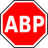
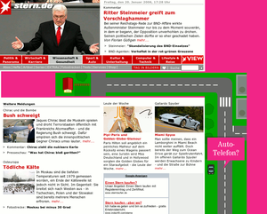
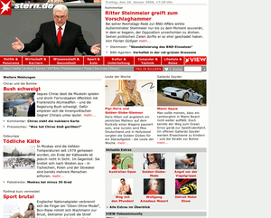

Adblock
Achtung!
Da von Firefox und Chromium regelmäßig neue Versionen erscheinen, kann dieser Artikel leider nicht – wie sonst in diesem Wiki üblich – mit einer bestimmten Ubuntu-Version getestet werden. Die jeweiligen Entwickler behalten sich vor, jederzeit neue Funktionen hinzuzufügen oder vorhandene wieder aus ihren Programmen zu entfernen. Unter solchen Umständen ist es nicht möglich, die Korrektheit der in diesem Artikel beschriebenen Informationen dauerhaft für eine Ubuntu-Version zu garantieren.
Zum Verständnis dieses Artikels sind folgende Seiten hilfreich:

Mit der Erweiterung Adblock bzw. dem Nachfolger Adblock Plus  und Adblock Edge kann man in Firefox und Chromium verhindern, dass in Internetseiten eingebundene Werbung angezeigt wird. Neben der Tatsache, dass man die Werbung nicht mehr sieht, hat das Blockieren von Werbeeinblendungen den angenehmen Nebeneffekt, dass Webseiten schneller laden, weniger Transfervolumen benötigen und somit den Geldbeutel von Internetsurfern ohne eine Flatrate schonen.
und Adblock Edge kann man in Firefox und Chromium verhindern, dass in Internetseiten eingebundene Werbung angezeigt wird. Neben der Tatsache, dass man die Werbung nicht mehr sieht, hat das Blockieren von Werbeeinblendungen den angenehmen Nebeneffekt, dass Webseiten schneller laden, weniger Transfervolumen benötigen und somit den Geldbeutel von Internetsurfern ohne eine Flatrate schonen.
Mehrere Jahren stand für Mozilla bzw. Firefox die Erweiterung Adblock zur Verfügung, deren Entwicklung jedoch vor geraumer Zeit ins Stocken geriet. Daher wurde ab Anfang 2006 eine neue Version Adblock Plus entwickelt, die im Vergleich zum älteren Adblock mehr Funktionen besitzt und laufend gepflegt wird. Seit 2011 steht auch eine Version für Chromium zur Verfügung.
Mit der Version 2.0 von Adblock Plus wurde Ende 2011 eine "Whitelist" eingeführt, um bestimmte, nicht aufdringliche Werbung zu erlauben. Details zu diesem Konzept gibt es auf der Homepage unter Akzeptable Werbung in Adblock Plus zulassen . Wer auch diese Werbung ausblenden möchte, kann diese Option in den Einstellungen von Adblock Plus deaktivieren oder dessen Fork namens Adblock Edge nutzen.
Beispiel¶
Wie eine Internetseite mit und ohne Werbeblocker aussieht, kann man dem folgenden Beispiel entnehmen:
| Unterschied einer Webseite mit und ohne Adblock | |
| Ohne Adblock | Mit Adblock |
|  |  |
Installation¶
Chromium¶
Wie jede andere Erweiterung kann auch Adblock über den Chrome Webstore  installiert werden.
installiert werden.
Firefox¶
Die Erweiterung für Firefox heißt (nicht verwunderlich) Adblock Plus . Die manuelle Installation von Erweiterungen im Browser Firefox wird im Artikel Firefox/Erweiterungen beschrieben.
Verwendung¶
Filterlisten nutzen¶
Eine Filterliste wird bei der Installation vorgeschlagen. Weitere können bei Bedarf über "Filter -> Filterabonnement hinzufügen" ergänzt werden. Diese Listen aktualisiert Adblock automatisch über das Internet, so dass neue Werbe-URLs schnell gefiltert werden können.
Man sollte es in jedem Falle vorziehen, eine vorgefertigte Filterliste zu nutzen. Diese werden von der Gemeinschaft oder einzelnen Personen gepflegt und sind damit stets aktuell. Des Weiteren gibt es einige Besonderheiten beim Erstellen der Filter zu beachten, da es sonst passieren kann, dass eigene Filter Adblock ausbremsen.
Empfehlenswerte Filterlisten¶
Es gibt hunderte, wenn nicht gar tausende verschiedene Filterlisten für Adblock. Für deutsche bzw. deutschsprachige Anwender sind vier Listen empfehlenswert.
Hinweis:
Unter Umständen können "konkurrierende" Listen das Surfen im Internet verlangsamen. Man sollte sich also im Regelfall für eine Liste entscheiden, da unterschiedliche Listen zum Teil die gleichen Filter nutzen. Die Listen „EasyPrivacy“ und „EasyList Socialfilter“ können dagegen mit anderen kombiniert werden.
| Empfehlenswerte Filterlisten für deutschsprachige Nutzer | |||
| Name | Filterliste | Bemerkung | Forenthread |
| EasyList-Filterliste | https://easylist-downloads.adblockplus.org/easylistgermany+easylist.txt | Blockt nahezu jegliche Form von Werbung | Forenthread zur Pflege der Liste |
| EasyPrivacy | https://easylist-downloads.adblockplus.org/easyprivacy.txt | Blockt Trackingskripts, Zählpixel, Google-Analytics usw. | easylist.adblockplus.org |
| Easylist Social-Filter | https://easylist-downloads.adblockplus.org/fanboy-social.txt | Blockt Social-Media-Buttons (Facebook, Twitter und Co) | easylist.adblockplus.org |
Es gibt daneben auch noch diverse andere Filter-Abonnements .
Eigene Filter erstellen¶
Es können "individuelle Regeln" gebildet werden, indem durch Rechtsklick auf einen Link bzw. eine Grafik diese über den entsprechenden Menüpunkt zukünftig geblockt werden kann. Eine Einführung in die manuelle Erstellung von Filtern findet sich auf der Adblock Plus-Homepage .
In Firefox lässt sich darüber hinaus für jede Seite eine "Liste der blockierbaren Elemente" anzeigen, die durch Rechtsklick bei Bedarf ebenfalls geblockt oder auch in die "Ausnahmeliste" aufgenommen werden können.
Eigene Filterliste erstellen¶
Man kann sich auch eine eigene Filterliste erstellen. Dies kann verschiedene Gründe haben. Vielleicht gibt es Seiten, zu denen andere keinen Zugang haben (Intranet) oder man möchte diese in einem öffentlichen Forum nicht nennen.
Um eine eigene Filterliste erstellen zu können, muss man zuerst eigene Filter erstellen (siehe oben). Dazu reicht es aus, einen einzigen Filter selbst erstellt zu haben. Möchte man daraus nun eine eigene Filterliste erstellen, muss man die Einstellungen von Adblock öffnen und in der Menüleiste zu "Filter -> Eigene Filter exportieren" navigieren.
Man wird aufgefordert, einen Namen für die zu exportierende Textdatei zu wählen und diese abzuspeichern. Man sollte diese eben erstellte Textdatei mit einem Editor [1] eigener Wahl öffnen und einen Namen, eventuelle Hinweise und Kommentare sowie ein Ablaufdatum angeben.
Diesen Hinweisen, Kommentaren, dem Namen und dem Ablaufdatum müssen ein Ausrufezeichen (!) und ein Leerzeichen voranstehen, so dass eine Beispielfilterliste wie folgt aussehen könnte:
[Adblock Plus 1.1] ! Checksum: oGrtZ3YOoPL474TgJFP5ZQ ! Name der Liste ! Last modified: 13 Nov 2010 09:00 UTC ! Expires: 5 days (update frequency) |http://api.flattr.com/button/* heise.de##.blogbottom
Nachfolgende Tabelle beschreibt die einzelnen Zeilen eines Kopfes einer Filterliste:
| Erklärungen des Kopfes einer Filterliste | |
| Detail | Erklärung |
[Adblock Plus 1.1] | Die erste Zeile [Adblock Plus 1.1] wird von Adblock selbst erstellt und gibt ab, welche Adblock-Version mindestens vorliegen muss, um die beinhaltende Filterliste nutzen zu können (siehe FAQ zu Adblock Plus). |
! Checksum: oGrtZ3YOoPL474TgJFP5ZQ | Siehe Prüfsumme. Weitere Hinweise zur Prüfsumme findet man in der FAQ . |
! Name der Liste | Dieser kann frei gewählt werden. |
! Last modified: 13 Nov 2010 09:00 UTC | Letzte Modifizierung (manuell zu pflegen). |
! Hier steht ein Hinweis oder Kommentar | Es können auch andere Hinweise/Kommentare angegeben werden. Diese sind natürlich optional. Wichtig ist nur, dass ihnen ein Ausrufezeichen (!) gefolgt von einem Leerzeichen voranstehen |
! Expires: 5 days (update frequency) | Ablaufdatum (in diesem Fall 5 Tage). Adblock wird nach der eingestellten Zeit erneut schauen, ob es ein Update der Liste gibt. Weitere Hinweise zum Ablaufdatum findet man in der FAQ . |
|http://api.flattr.com/button/* | Die eigentlichen beiden Filter beginnen erst unterhalb des „Ausrufezeichen-Abschnittes“. In diesem Beispiel werden alle Flattr-Icons geblockt. |
heise.de##.blogbottom | Der Abschnitt namens "blogbottom" auf der heise.de-Seite wird versteckt (nicht geblockt). |
Hat man nun einen Namen, eventuelle Hinweise und Kommentare sowie ein Ablaufdatum eingegeben, muss man, da sich die Prüfsumme (Checksum) durch die Bearbeitung geändert hat, eine neue erstellen. Dazu bedient man sich am besten des Perl-Skripts von Wladimir Palant, dem Betreuer von Adblock Plus, das als addChecksum.pl  heruntergeladen werden kann. Man speichert es im Homeverzeichnis ab und ruft es dann über den Befehl im Terminal [2] auf (der Name der abgespeicherten eigenen Filterliste muss angepasst werden):
heruntergeladen werden kann. Man speichert es im Homeverzeichnis ab und ruft es dann über den Befehl im Terminal [2] auf (der Name der abgespeicherten eigenen Filterliste muss angepasst werden):
perl addChecksum.pl name_der_eigenen_filterliste.txt
Abschließend kann man dann diese Textdatei z.B. per FTP auf einen Webspace der Wahl laden und die URL der hochgeladenen Filterliste wiederum in Adblock Plus über "Filter -> Filterabonnement hinzufügen" aufnehmen.
Alternativen¶
Bedingt durch die Einführung von "akzeptabler Werbung" sind mehrere Abspaltungen (Fork) von Adblock Plus ohne diese Funktion entstanden:
Trueblock Plus
(Weiterentwicklung eingestellt)
Proxyserver¶
Die bisherigen Lösungen zielen auf einzelne Browser ab. Wenn man stattdessen eine browser-unabhängige Lösung einrichten möchte, können die jeweiligen Filterlisten auch konvertiert werden und als Regelwerk eines Proxyservers dienen.
Kritik¶
Inhaltsfilter aller Art lösen immer wieder Diskussion aus, ob die Blockierung von Werbung dazu führen könnte, dass werbefinanzierte Angebote stark zurückgehen (Beispiel ). Auch gibt es einige Betreiber, die dazu übergegangen sind, die Nutzung von AdBlock Plus zu erkennen und Gegenmaßnahmen zu ergreifen. So blenden einige Websites Warnmeldungen ein, die auf das Konzept der Werbefinanzierung hinweisen und um Fairness bitten. Andere Websites loggen Adblock Plus-Nutzer zwangsweise aus, selbst wenn diese die Seite in ihre Whitelist eingetragen haben. Dann bleibt nichts anderes übrig, als dieses Seiten zu meiden oder einen anderen Browser ohne Adblock Plus zu verwenden.
Links¶
Adblock Plus - Wikipedia
Adblock/Element Hiding Helper - Erstellen von Regeln zum Verstecken von Elementen
- Erstellt mit Inyoka
-
 2004 – 2017 ubuntuusers.de • Einige Rechte vorbehalten
2004 – 2017 ubuntuusers.de • Einige Rechte vorbehalten
Lizenz • Kontakt • Datenschutz • Impressum • Serverstatus -
Serverhousing gespendet von